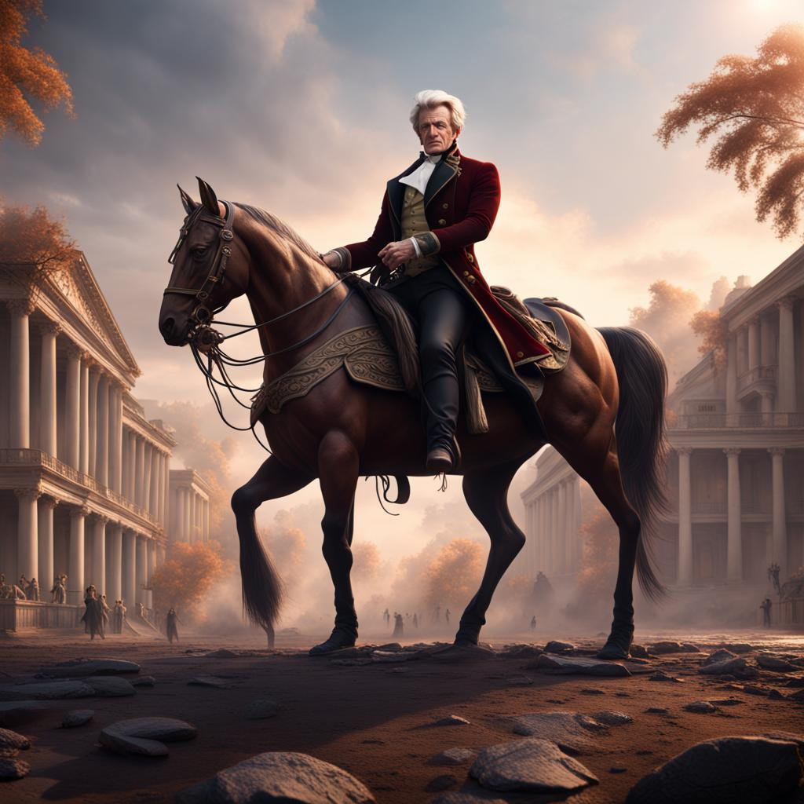
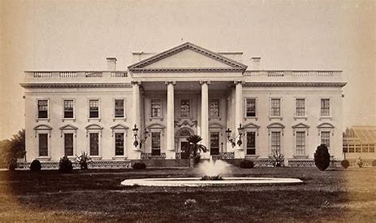

ABOUT THE CAFE
Welcome to Homemade Old Hickories, where history meets culinary excellence in a dining experience that pays tribute to the legacy of America's seventh president, Andrew Jackson. Nestled in the heart of Washington, D.C., this unique restaurant offers a one-of-a-kind journey through time and flavor, capturing the essence of the early 19th century.

Opening hours: everyday from 6am to 5pm.
Address: The White House
THE MENU
Inaugural Party Purfait $13.00
The Inaugural Party Parfait is more than a dessert; it's a symbol of a new beginning. Perfectly suited for significant events such as presidential inaugurations, gala parties, or milestone celebrations, this exquisite creation is a fusion of flavors and textures designed to delight the senses and mark a momentous occasion in style.
Andrew Jackson was the 7th President of the United States, and his presidential inauguration in 1829 was known for being a particularly festive and widely attended occasion. This dessert pays homage to Jackson's role as a prominent figure in American political history and his inauguration.
Texas Treschleches $17.00
The Texas Treschleches is a dessert that brings the vibrant flavors of Texas to the iconic Tres Leches cake. A slice of this indulgent treat is a journey through a symphony of tastes and textures, starting with the delicate sponge cake that melts in your mouth.
In 1836, President Andrew Jackson acknowledged Texas' desire to become a state. However, he stated that this would require care and diplomatic negotiations. Jackson recognized the benefits of adding Texas to the U.S., such as expanding the nation's territory and its agriculture

WHERE TO FIND US
1600 Pennsylvania Ave NW, Washington, DC 20500
